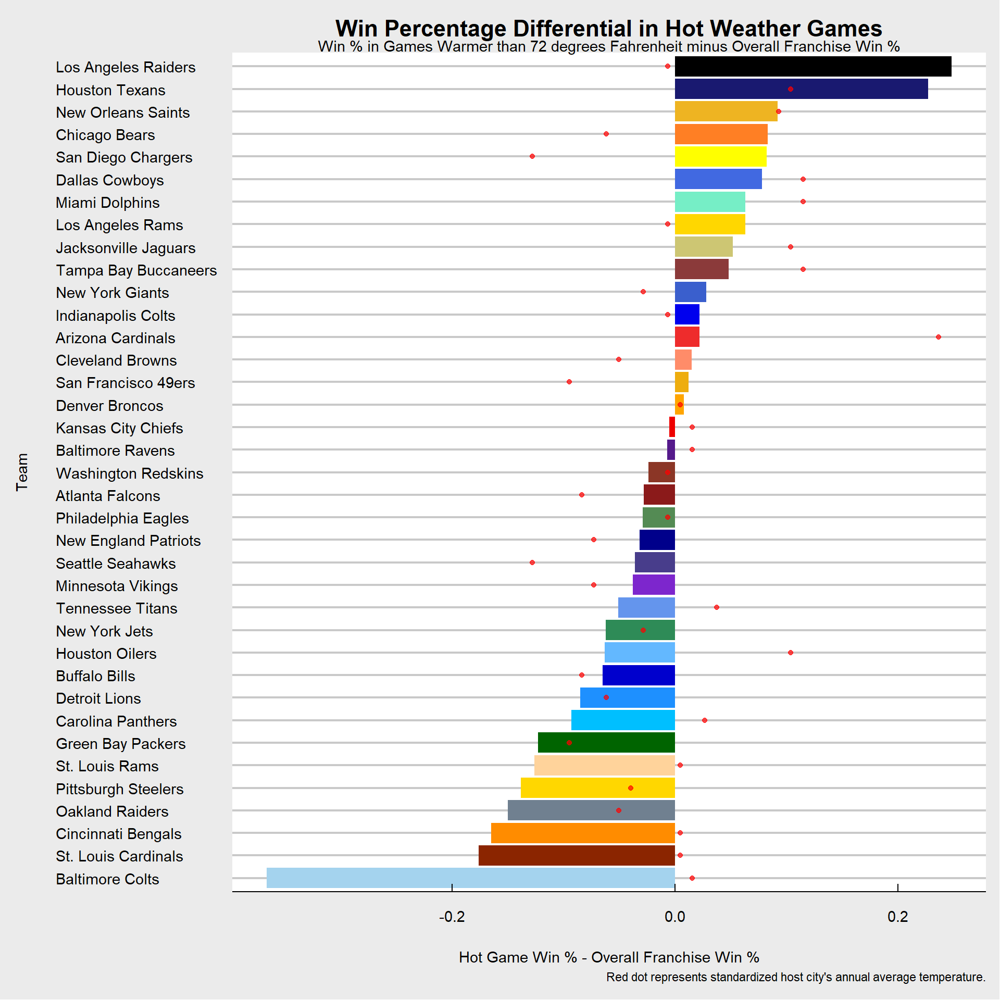

# getting data in from NFL Savant
NFLweather <- read_excel("C:/2022 Fall/STAT 5014 Stat Program Packages/Project/weather_20131231.xls")
attach(NFLweather)
# View(NFLweather)Preview
Finding how NFL teams’ host cities’ climates impact their performance in extreme weather games.
Objectives
The purpose of this project is to determine if the climate of National Football League teams’ host cities impacts that team’s performance in extreme weather games.
Data from NFLSavant.com detailed the outcome of every NFL game from 1970 to 2013 along with the weather from that game. I decided to split the results of NFL games up between the approximately 1000 coldest games played during this time frame, with the approximately 1000 warmest games played. These bounds were 33 degrees Fahrenheit and colder and 73 degrees Fahrenheit. To overcome biases for teams that are just historically better/worse, the difference in win percentage of normal weather games (between 34 and 72 degrees Fahrenheit) with the cold games and the hot games win percentages. I will visualize these results along with figuring out if there is any correlation between host city’s warmest average monthly high and coldest average monthly low during the NFL season with their win percentages in different weather.
Data Inport
Data Preparation
From the original data, I summed each franchise’s total wins, losses, and ties, and calculated their win percentage.
# creating empty vectors to add more data to set
homewin = c()
awaywin = c()
homeloss = c()
awayloss = c()
hometie = c()
awaytie = c()
# to show who won each game
for (i in 1:nrow(NFLweather)) {
if (home_score[i] > away_score[i]) {
homewin[i] = 1
awaywin[i] = 0
homeloss[i] = 0
awayloss[i] = 1
hometie[i] = 0
awaytie[i] = 0
}
if (home_score[i] < away_score[i]) {
homewin[i] = 0
awaywin[i] = 1
homeloss[i] = 1
awayloss[i] = 0
hometie[i] = 0
awaytie[i] = 0
}
if (home_score[i] == away_score[i]) {
homewin[i] = 0
awaywin[i] = 0
homeloss[i] = 0
awayloss[i] = 0
hometie[i] = 1
awaytie[i] = 1
}
}
# adding status of game wins to data
NFLweather1 = data.frame(cbind(NFLweather, homewin, awaywin,
homeloss, awayloss, hometie, awaytie), stringsAsFactors = FALSE)
# adding wins/losses/ties per team
teams = aggregate(NFLweather1$homewin, by = list(Category = NFLweather1$home_team),
FUN = sum)[, 1]
wins = aggregate(NFLweather1$homewin, by = list(Category = NFLweather1$home_team),
FUN = sum)[, 2] + aggregate(NFLweather1$awaywin, by = list(Category = NFLweather1$away_team),
FUN = sum)[, 2]
losses = aggregate(NFLweather1$homeloss, by = list(Category = NFLweather1$home_team),
FUN = sum)[, 2] + aggregate(NFLweather1$awayloss, by = list(Category = NFLweather1$away_team),
FUN = sum)[, 2]
ties = aggregate(NFLweather1$hometie, by = list(Category = NFLweather1$home_team),
FUN = sum)[, 2] + aggregate(NFLweather1$awaytie, by = list(Category = NFLweather1$away_team),
FUN = sum)[, 2]
winpct = wins/(wins + losses) #calculating win percentage for franchise history
# all time team records
records = data.frame(cbind(teams, wins, losses, ties, round(winpct,
3)))
colnames(records) = c("Team", "Wins", "Losses", "Ties", "Win %")
records Team Wins Losses Ties Win %
1 Arizona Cardinals 119 179 0 0.399
2 Atlanta Falcons 295 419 6 0.413
3 Baltimore Colts 187 159 6 0.54
4 Baltimore Ravens 167 132 1 0.559
5 Boston Patriots 2 12 0 0.143
6 Buffalo Bills 321 374 2 0.462
7 Carolina Panthers 150 154 0 0.493
8 Chicago Bears 416 412 7 0.502
9 Cincinnati Bengals 310 378 1 0.451
10 Cleveland Browns 366 408 8 0.473
11 Dallas Cowboys 488 360 6 0.575
12 Denver Broncos 408 293 6 0.582
13 Detroit Lions 328 456 15 0.418
14 Green Bay Packers 469 366 14 0.562
15 Houston Oilers 188 235 2 0.444
16 Houston Texans 78 114 0 0.406
17 Indianapolis Colts 262 234 0 0.528
18 Jacksonville Jaguars 145 159 0 0.477
19 Kansas City Chiefs 330 355 7 0.482
20 Los Angeles Raiders 124 88 0 0.585
21 Los Angeles Rams 279 249 11 0.528
22 Miami Dolphins 418 295 2 0.586
23 Minnesota Vikings 436 375 10 0.538
24 New England Patriots 379 304 0 0.555
25 New Orleans Saints 314 399 5 0.44
26 New York Giants 417 416 9 0.501
27 New York Jets 309 382 2 0.447
28 Oakland Raiders 252 242 6 0.51
29 Philadelphia Eagles 416 416 13 0.5
30 Phoenix Cardinals 32 64 0 0.333
31 Pittsburgh Steelers 489 370 9 0.569
32 San Diego Chargers 331 360 5 0.479
33 San Francisco 49ers 465 373 11 0.555
34 Seattle Seahawks 289 300 0 0.491
35 St. Louis Cardinals 186 205 14 0.476
36 St. Louis Rams 123 158 1 0.438
37 Tampa Bay Buccaneers 232 366 1 0.388
38 Tennessee Oilers 16 16 0 0.5
39 Tennessee Titans 136 111 0 0.551
40 Washington Redskins 424 408 12 0.51Data Summarization
I repeated the process above with conditions of the coldest and hottest thousand games in NFL history, along with the most extreme 250 hottest and coldest. I compiled each franchises’ records in each of the weather conditions (Extreme Cold, Cold, Normal, Hot, Extreme Hot). I finally compiled a table of just the win percentages for each franchise in each of the weather conditions and included the average annual temperature, coldest monthly low from the months of September to February, and the highest monthly high temperature from the months of September to February.
# doing the same as above for the coldest 1000ish games...
coldGames = NFLweather1[NFLweather1$temperature < 34, ]
winsC = aggregate(NFLweather1$homewin & NFLweather1$temperature <
34, by = list(Category = NFLweather1$home_team), FUN = sum)[,
2] + aggregate(NFLweather1$awaywin & NFLweather1$temperature <
34, by = list(Category = NFLweather1$away_team), FUN = sum)[,
2]
lossesC = aggregate(NFLweather1$homeloss & NFLweather1$temperature <
34, by = list(Category = NFLweather1$home_team), FUN = sum)[,
2] + aggregate(NFLweather1$awayloss & NFLweather1$temperature <
34, by = list(Category = NFLweather1$away_team), FUN = sum)[,
2]
tiesC = aggregate(NFLweather1$hometie & NFLweather1$temperature <
34, by = list(Category = NFLweather1$home_team), FUN = sum)[,
2] + aggregate(NFLweather1$awaytie & NFLweather1$temperature <
34, by = list(Category = NFLweather1$away_team), FUN = sum)[,
2]
winpctC = winsC/(winsC + lossesC)
recordsC = data.frame(cbind(teams, winsC, lossesC, tiesC, round(winpctC,
3)))
# and hottest 1000 games...
hotGames = NFLweather1[NFLweather1$temperature > 72, ]
winsH = aggregate(NFLweather1$homewin & NFLweather1$temperature >
72, by = list(Category = NFLweather1$home_team), FUN = sum)[,
2] + aggregate(NFLweather1$awaywin & NFLweather1$temperature >
72, by = list(Category = NFLweather1$away_team), FUN = sum)[,
2]
lossesH = aggregate(NFLweather1$homeloss & NFLweather1$temperature >
72, by = list(Category = NFLweather1$home_team), FUN = sum)[,
2] + aggregate(NFLweather1$awayloss & NFLweather1$temperature >
72, by = list(Category = NFLweather1$away_team), FUN = sum)[,
2]
tiesH = aggregate(NFLweather1$hometie & NFLweather1$temperature >
72, by = list(Category = NFLweather1$home_team), FUN = sum)[,
2] + aggregate(NFLweather1$awaytie & NFLweather1$temperature >
72, by = list(Category = NFLweather1$away_team), FUN = sum)[,
2]
winpctH = winsH/(winsH + lossesH)
recordsH = data.frame(cbind(teams, winsH, lossesH, tiesH, round(winpctH,
3)))
# and the coldest ~250 games
extremeColdGames = NFLweather1[NFLweather1$temperature < 22,
]
winsXC = aggregate(NFLweather1$homewin & NFLweather1$temperature <
22, by = list(Category = NFLweather1$home_team), FUN = sum)[,
2] + aggregate(NFLweather1$awaywin & NFLweather1$temperature <
22, by = list(Category = NFLweather1$away_team), FUN = sum)[,
2]
lossesXC = aggregate(NFLweather1$homeloss & NFLweather1$temperature <
22, by = list(Category = NFLweather1$home_team), FUN = sum)[,
2] + aggregate(NFLweather1$awayloss & NFLweather1$temperature <
22, by = list(Category = NFLweather1$away_team), FUN = sum)[,
2]
tiesXC = aggregate(NFLweather1$hometie & NFLweather1$temperature <
22, by = list(Category = NFLweather1$home_team), FUN = sum)[,
2] + aggregate(NFLweather1$awaytie & NFLweather1$temperature <
22, by = list(Category = NFLweather1$away_team), FUN = sum)[,
2]
winpctXC = winsXC/(winsXC + lossesXC)
recordsXC = data.frame(cbind(teams, winsXC, lossesXC, tiesXC,
round(winpctXC, 3)))
# and hottest ~250 games in NFL history
extremeHotGames = NFLweather1[NFLweather1$temperature > 81, ]
winsXH = aggregate(NFLweather1$homewin & NFLweather1$temperature >
81, by = list(Category = NFLweather1$home_team), FUN = sum)[,
2] + aggregate(NFLweather1$awaywin & NFLweather1$temperature >
81, by = list(Category = NFLweather1$away_team), FUN = sum)[,
2]
lossesXH = aggregate(NFLweather1$homeloss & NFLweather1$temperature >
81, by = list(Category = NFLweather1$home_team), FUN = sum)[,
2] + aggregate(NFLweather1$awayloss & NFLweather1$temperature >
81, by = list(Category = NFLweather1$away_team), FUN = sum)[,
2]
tiesXH = aggregate(NFLweather1$hometie & NFLweather1$temperature >
81, by = list(Category = NFLweather1$home_team), FUN = sum)[,
2] + aggregate(NFLweather1$awaytie & NFLweather1$temperature >
81, by = list(Category = NFLweather1$away_team), FUN = sum)[,
2]
winpctXH = winsXH/(winsXH + lossesXH)
recordsXH = data.frame(cbind(teams, winsXH, lossesXH, tiesXH,
round(winpctXH, 3)))
# games that I think were played indoors from looking at
# data, although I have no way to figure this out for sure
indoorGames = NFLweather1[NFLweather1$temperature == 0 & NFLweather1$wind_chill ==
0 | NFLweather1$weather == "72 degrees- no wind", ]
winsI = aggregate(NFLweather1$homewin & (NFLweather1$temperature ==
0 & NFLweather1$wind_chill == 0 | NFLweather1$weather ==
"72 degrees- no wind"), by = list(Category = NFLweather1$home_team),
FUN = sum)[, 2] + aggregate(NFLweather1$awaywin & (NFLweather1$temperature ==
0 & NFLweather1$wind_chill == 0 | NFLweather1$weather ==
"72 degrees- no wind"), by = list(Category = NFLweather1$away_team),
FUN = sum)[, 2]
lossesI = aggregate(NFLweather1$homeloss & (NFLweather1$temperature ==
0 & NFLweather1$wind_chill == 0 | NFLweather1$weather ==
"72 degrees- no wind"), by = list(Category = NFLweather1$home_team),
FUN = sum)[, 2] + aggregate(NFLweather1$awayloss & (NFLweather1$temperature ==
0 & NFLweather1$wind_chill == 0 | NFLweather1$weather ==
"72 degrees- no wind"), by = list(Category = NFLweather1$away_team),
FUN = sum)[, 2]
tiesI = aggregate(NFLweather1$hometie & (NFLweather1$temperature ==
0 & NFLweather1$wind_chill == 0 | NFLweather1$weather ==
"72 degrees- no wind"), by = list(Category = NFLweather1$home_team),
FUN = sum)[, 2] + aggregate(NFLweather1$awaytie & (NFLweather1$temperature ==
0 & NFLweather1$wind_chill == 0 | NFLweather1$weather ==
"72 degrees- no wind"), by = list(Category = NFLweather1$away_team),
FUN = sum)[, 2]
winpctI = winsI/(winsI + lossesI)
recordsI = data.frame(cbind(teams, winsI, lossesI, tiesI, round(winpctI,
3)))
# games played in temperatures between 34 and 72 degrees
normalGames = NFLweather1[(NFLweather1$temperature <= 72 & NFLweather1$temperature >=
34), ]
winsN = aggregate(NFLweather1$homewin & (NFLweather1$temperature <=
72 & NFLweather1$temperature >= 34), by = list(Category = NFLweather1$home_team),
FUN = sum)[, 2] + aggregate(NFLweather1$awaywin & (NFLweather1$temperature <=
72 & NFLweather1$temperature >= 34), by = list(Category = NFLweather1$away_team),
FUN = sum)[, 2]
lossesN = aggregate(NFLweather1$homeloss & (NFLweather1$temperature <=
72 & NFLweather1$temperature >= 34), by = list(Category = NFLweather1$home_team),
FUN = sum)[, 2] + aggregate(NFLweather1$awayloss & (NFLweather1$temperature <=
72 & NFLweather1$temperature >= 34), by = list(Category = NFLweather1$away_team),
FUN = sum)[, 2]
tiesN = aggregate(NFLweather1$hometie & (NFLweather1$temperature <=
72 & NFLweather1$temperature >= 34), by = list(Category = NFLweather1$home_team),
FUN = sum)[, 2] + aggregate(NFLweather1$awaytie & (NFLweather1$temperature <=
72 & NFLweather1$temperature >= 34), by = list(Category = NFLweather1$away_team),
FUN = sum)[, 2]
winpctN = winsN/(winsN + lossesN)
recordsN = data.frame(cbind(teams, winsN, lossesN, tiesN, round(winpctN,
3)))
# putting together wins/losses for different types of
# weather
recordsTable = data.frame(cbind(records, recordsXC[, 2:5], recordsC[,
2:5], recordsN[, 2:5], recordsH[, 2:5], recordsXH[, 2:5]))
colnames(recordsTable) = c("Team", "Wins", "Losses", "Ties",
"Win%", "XCWins", "XCLosses", "XCTies", "XCWin%", "CWins",
"CLosses", "CTies", "CWin%", "NWins", "NLosses", "NTies",
"NWin%", "HWins", "HLosses", "HTies", "HWin%", "EHWins",
"EHLosses", "EHTies", "EHWin%")
# instances where a team did not play in that particular
# weather in their history
recordsTable[5, 9] = 0
recordsTable[5, 21] = 0
recordsTable[5, 25] = 0
recordsTable[9, 25] = 0
recordsTable[38, 9] = 0
recordsTable[38, 25] = 0
# changing all the numbers from characters to numbers to do
# calculations with
recordsTable$Wins = as.numeric(as.character(recordsTable$Wins))
recordsTable$Losses = as.numeric(as.character(recordsTable$Losses))
recordsTable$Ties = as.numeric(as.character(recordsTable$Ties))
recordsTable$"Win%" = as.numeric(as.character(recordsTable$"Win%"))
recordsTable$XCWins = as.numeric(as.character(recordsTable$XCWins))
recordsTable$XCLosses = as.numeric(as.character(recordsTable$XCLosses))
recordsTable$XCTies = as.numeric(as.character(recordsTable$XCTies))
recordsTable$"XCWin%" = as.numeric(as.character(recordsTable$"XCWin%"))
recordsTable$CWins = as.numeric(as.character(recordsTable$CWins))
recordsTable$CLosses = as.numeric(as.character(recordsTable$CLosses))
recordsTable$CTies = as.numeric(as.character(recordsTable$CTies))
recordsTable$"CWin%" = as.numeric(as.character(recordsTable$"CWin%"))
recordsTable$NWins = as.numeric(as.character(recordsTable$NWins))
recordsTable$NLosses = as.numeric(as.character(recordsTable$NLosses))
recordsTable$NTies = as.numeric(as.character(recordsTable$NTies))
recordsTable$"NWin%" = as.numeric(as.character(recordsTable$"NWin%"))
recordsTable$HWins = as.numeric(as.character(recordsTable$HWins))
recordsTable$HLosses = as.numeric(as.character(recordsTable$HLosses))
recordsTable$HTies = as.numeric(as.character(recordsTable$HTies))
recordsTable$"HWin%" = as.numeric(as.character(recordsTable$"HWin%"))
recordsTable$EHWins = as.numeric(as.character(recordsTable$EHWins))
recordsTable$EHLosses = as.numeric(as.character(recordsTable$EHLosses))
recordsTable$EHTies = as.numeric(as.character(recordsTable$EHTies))
recordsTable$"EHWin%" = as.numeric(as.character(recordsTable$"EHWin%"))
# recordsTable
# finding win% differentials from overall record to records
# in different temperatures
diffTable = data.frame(cbind(records[, 1], round(recordsTable[,
9] - recordsTable[, 5], 3), round(recordsTable[, 13] - recordsTable[,
5], 3), round(recordsTable[, 17] - recordsTable[, 5], 3),
round(recordsTable[, 21] - recordsTable[, 5], 3), round(recordsTable[,
25] - recordsTable[, 5], 3)))
colnames(diffTable) = c("Team", "XC", "C", "N", "H", "EH")
# changing elements to numbers again
diffTable$XC = as.numeric(as.character(diffTable$XC))
diffTable$C = as.numeric(as.character(diffTable$C))
diffTable$N = as.numeric(as.character(diffTable$N))
diffTable$H = as.numeric(as.character(diffTable$H))
diffTable$EH = as.numeric(as.character(diffTable$EH))
# getting rid of teams who played less than 100 games in
# franchise history
diffTable2 = diffTable[-5, ]
diffTable2 = diffTable2[-29, ]
diffTable2 = diffTable2[-36, ]
# I want temperatures to be a part of this visualization,
# so I found the average annual temperature for each host
# city and added it to the data set
temps = as.numeric(c(87, 73, 67, 67, 57, 72, 61, 64, 61, 78,
66, 59, 46, 80, 80, 63, 80, 65, 75, 75, 84, 55, 59, 79, 63,
63, 64, 65, 61, 62, 64, 61, 57, 57, 83, 72, 68))
tempsH = as.numeric(c(100, 71, 80, 80, 71, 81, 73, 79, 74, 89,
79, 73, 70, 88, 88, 78, 88, 80, 78, 78, 89, 72, 72, 87, 76,
76, 74, 78, 75, 67, 70, 67, 79, 79, 89, 82, 78))
tempsC = as.numeric(c(45, 35, 29, 29, 19, 30, 18, 22, 22, 30,
18, 18, 9, 44, 44, 20, 39, 22, 58, 58, 60, 8, 22, 45, 26,
26, 44, 26, 21, 48, 46, 36, 21, 21, 52, 28, 27))
tempsTable = data.frame(cbind(records[, 1], temps, tempsH, tempsC))Warning in cbind(records[, 1], temps, tempsH, tempsC): number of rows of result
is not a multiple of vector length (arg 2)tempsTable$temps = as.numeric(as.character(tempsTable$temps))
diffTable3 = data.frame(cbind(diffTable2, temps, tempsH, tempsC))
colnames(diffTable3) = c("Team", "XC", "C", "N", "H", "XH", "Temp",
"TempH", "TempC")
diffTable3 Team XC C N H XH Temp TempH TempC
1 Arizona Cardinals -0.399 -0.399 0.010 0.022 0.045 87 100 45
2 Atlanta Falcons -0.097 -0.070 0.006 -0.028 -0.105 73 71 35
3 Baltimore Colts 0.174 0.037 0.026 -0.366 -0.540 67 80 29
4 Baltimore Ravens 0.441 0.108 -0.013 -0.007 -0.159 67 80 29
6 Buffalo Bills 0.153 0.066 -0.003 -0.065 -0.062 57 71 19
7 Carolina Panthers 0.007 0.033 0.011 -0.093 -0.160 72 81 30
8 Chicago Bears 0.036 0.014 -0.009 0.083 0.298 61 73 18
9 Cincinnati Bengals 0.299 0.067 0.004 -0.165 -0.451 64 79 22
10 Cleveland Browns 0.027 -0.048 0.008 0.015 -0.273 61 74 22
11 Dallas Cowboys -0.218 -0.104 -0.005 0.078 0.131 78 89 30
12 Denver Broncos 0.033 0.011 -0.003 0.008 0.118 66 79 18
13 Detroit Lions 0.082 -0.006 0.006 -0.085 0.182 59 73 18
14 Green Bay Packers 0.046 0.083 -0.015 -0.123 -0.229 46 70 9
15 Houston Oilers -0.158 -0.087 0.011 -0.063 0.223 80 88 44
16 Houston Texans -0.006 0.094 -0.049 0.227 0.412 80 88 44
17 Indianapolis Colts -0.028 -0.122 0.007 0.022 0.108 63 78 20
18 Jacksonville Jaguars -0.048 -0.068 -0.010 0.052 -0.124 80 88 39
19 Kansas City Chiefs 0.165 0.030 -0.004 -0.005 -0.097 65 80 22
20 Los Angeles Raiders -0.385 -0.130 -0.008 0.248 0.415 75 78 58
21 Los Angeles Rams -0.255 -0.278 0.011 0.063 0.072 75 78 58
22 Miami Dolphins -0.015 -0.162 -0.032 0.063 0.067 84 89 60
23 Minnesota Vikings -0.023 0.013 0.000 -0.038 -0.038 55 72 8
24 New England Patriots -0.155 0.098 -0.009 -0.032 -0.247 59 72 22
25 New Orleans Saints -0.107 -0.040 -0.007 0.092 -0.040 79 87 45
26 New York Giants -0.201 -0.008 -0.002 0.028 -0.030 63 76 26
27 New York Jets 0.053 -0.064 0.016 -0.062 -0.003 63 76 26
28 Oakland Raiders -0.260 -0.125 0.016 -0.150 -0.010 64 74 44
29 Philadelphia Eagles 0.071 -0.013 0.004 -0.029 0.136 65 78 26
31 Pittsburgh Steelers -0.040 0.071 -0.002 -0.138 -0.236 61 75 21
32 San Diego Chargers -0.193 -0.090 -0.002 0.082 0.077 62 67 48
33 San Francisco 49ers 0.045 -0.070 0.002 0.012 0.112 64 70 46
34 Seattle Seahawks -0.062 -0.146 0.010 -0.036 0.080 61 67 36
35 St. Louis Cardinals -0.091 -0.091 0.027 -0.176 -0.476 57 79 21
36 St. Louis Rams 0.062 -0.009 0.008 -0.126 -0.188 57 79 21
37 Tampa Bay Buccaneers -0.188 -0.240 -0.006 0.048 0.017 83 89 52
39 Tennessee Titans -0.107 -0.113 0.018 -0.051 -0.384 72 82 28
40 Washington Redskins 0.046 0.018 0.001 -0.024 -0.157 68 78 27Transformations
Because temperature are on a different scale than the difference of win percentage, I standardized temperature to be within the range of the differences of win percentages.
# temperatures are on a much different scale than win%, so
# I standardized the temperatures and added them to the
# data
s.temp = (diffTable3$Temp - mean(diffTable3$Temp))/(50 * sd(diffTable3$Temp))
s.tempH = (diffTable3$TempH - mean(diffTable3$TempH))/(50 * sd(diffTable3$TempH))
s.tempC = (diffTable3$TempC - mean(diffTable3$TempC))/(50 * sd(diffTable3$TempC))
diffTable4 = data.frame(cbind(diffTable2, as.numeric(s.tempH),
as.numeric(s.tempC)))
colnames(diffTable4) = c("Team", "XC", "C", "N", "H", "EH", "s.tempH",
"s.tempC")Data visualization
I used ggplot to visualize the data. I did a barplot on the difference of win percentages, putting them in order from the best performers in that weather to the worst performers in that weather compared to normal weather games. To show the impact of the host city’s temperature, I added dots to the barplot of the standardized host city temperatures; for the cold weather performance barplot, I used the host city’s lowest monthly average low temperature during the NFL season and the same for warm weather.
# base R to make sure I am on the right track
# barplot(diffTable2$XC, col = '907909')
# barplot(diffTable2$C) barplot(diffTable2$N)
# barplot(diffTable2$H) barplot(diffTable2$EH)
# vectors of colors that I felt like best represented each
# franchise's colors
colors = c("firebrick2", "firebrick4", "lightskyblue2", "purple4",
"mediumblue", "deepskyblue1", "chocolate1", "darkorange",
"salmon1", "royalblue", "orange", "dodgerblue1", "darkgreen",
"steelblue1", "midnightblue", "blue2", "khaki3", "red2",
"black", "gold", "aquamarine2", "purple3", "blue4", "goldenrod2",
"royalblue3", "seagreen4", "slategray", "palegreen4", "gold1",
"yellow", "darkgoldenrod2", "darkslateblue", "orangered4",
"burlywood1", "indianred4", "cornflowerblue", "tomato4")
# ggplot(data = diffTable2, aes(x = reorder(Team, C, na.rm
# = TRUE), y = C)) + geom_bar(stat = 'identity', fill =
# colors) + coord_flip() + theme_economist_white()
# ggplot(data = diffTable2, aes(x = reorder(Team, H, na.rm
# = TRUE), y = H)) + geom_bar(stat = 'identity', fill =
# colors) + coord_flip() + theme_economist_white()
# ggplot(data = diffTable2, aes(x = reorder(Team, N, na.rm
# = TRUE), y = N)) + geom_bar(stat = 'identity', fill =
# colors) + coord_flip() + theme_economist_white()
# plotting just the temperature data ggplot(data =
# diffTable4, aes(x = reorder(Team, St.Temp, na.rm = TRUE),
# y = St.Temp)) + geom_bar(stat = 'identity', fill =
# colors) + coord_flip() + theme_economist_white() +
# ggtitle('Standardized Temperature by Team's Host City') +
# theme(plot.title = element_text(hjust = 0.5),
# plot.subtitle = element_text(hjust = 0.5), axis.title.x =
# element_text(margin = margin(t = 20)), axis.title.y =
# element_text(margin = margin(r = 20))) + labs(y =
# 'Standardized Host City Temperature', x = 'Team')
# plotting win percentage differential in cold games
ggplot(data = diffTable4, aes(x = reorder(Team, C, na.rm = TRUE),
y = C)) + geom_bar(stat = "identity", fill = colors) + coord_flip() +
theme_economist_white() + ggtitle("Win Percentage Differential in Cold Weather Games",
subtitle = "Win % in Games Colder than 22 degrees Fahrenheit minus Overall Franchise Win %") +
theme(plot.title = element_text(hjust = 0.5), plot.subtitle = element_text(hjust = 0.5),
axis.title.x = element_text(margin = margin(t = 20)),
axis.title.y = element_text(margin = margin(r = 20))) +
labs(y = "Cold Game Win % - Overall Franchise Win %", x = "Team",
caption = "Blue dot represents standardized host city's annual average temperature.") +
geom_point(data = diffTable4, aes(x = reorder(Team, C, na.rm = TRUE),
y = -s.tempC), col = "blue", alpha = 0.7)# showing teams who may need to rely on normal/abnormal
# weather to win games ggplot(data = diffTable4, aes(x =
# reorder(Team, N, na.rm = TRUE), y = N)) + geom_bar(stat =
# 'identity', fill = colors) + coord_flip() +
# theme_economist_white() + ggtitle('Win Percentage
# Differential in Typical Weather Games', subtitle = 'Win %
# in Games Between 23 and 72 degrees Fahrenheit minus
# Overall Franchise Win %') + theme(plot.title =
# element_text(hjust = 0.5), plot.subtitle =
# element_text(hjust = 0.5), axis.title.x =
# element_text(margin = margin(t = 20)), axis.title.y =
# element_text(margin = margin(r = 20))) + labs(y =
# 'Typical Game Win % - Overall Franchise Win %', x =
# 'Team', caption = 'Black dot represents standardized host
# city's annual average temperature.') + geom_point(data =
# diffTable4, aes(x = reorder(Team, N, na.rm = TRUE), y =
# s.temp), col = 'black', alpha = 0.5)
# plotting win percentage differential in hot games
ggplot(data = diffTable3, aes(x = reorder(Team, H, na.rm = TRUE),
y = H)) + geom_bar(stat = "identity", fill = colors) + coord_flip() +
theme_economist_white() + ggtitle("Win Percentage Differential in Hot Weather Games",
subtitle = "Win % in Games Warmer than 72 degrees Fahrenheit minus Overall Franchise Win %") +
theme(plot.title = element_text(hjust = 0.5), plot.subtitle = element_text(hjust = 0.5),
axis.title.x = element_text(margin = margin(t = 20)),
axis.title.y = element_text(margin = margin(r = 20))) +
labs(y = "Hot Game Win % - Overall Franchise Win %", x = "Team",
caption = "Red dot represents standardized host city's annual average temperature.") +
geom_point(data = diffTable4, aes(x = reorder(Team, N, na.rm = TRUE),
y = 4 * s.tempH), col = "red", alpha = 0.7)
These ggplots do not format well in RMarkdown, so I will attach them separately. However, it can be seen that more teams located in cold cities (represented by the blue dots) have a improved win percentage in cold weather (bars tend to the right for these cities). More of the warmer cities tend in the worse performances. In the normal temperature graph, the temperature dots appear scattered as expected. Finally, in the hot weather graph, dots again appear pretty scattered, hinting at no relationship between win percentage in hot games and host city high temperatures.
Correlation Analysis
With these visualizations, I want to quantify the relationship between host city temperature and extreme weather game performance.
cor(diffTable3$C, tempsC)[1] -0.6294471cor(diffTable3$N, temps)[1] -0.2402024cor(diffTable3$H, tempsH)[1] 0.2333481ggplot(diffTable3, aes(tempsC, C)) + geom_point() + geom_smooth(method = "lm") +
theme_economist_white() + ggtitle("Win % Differential vs. Host City Temp",
subtitle = "Win % in Games Colder than 34 degree F - Overall Franchise Win %") +
theme(plot.title = element_text(hjust = 0.5), plot.subtitle = element_text(hjust = 0.5),
axis.title.x = element_text(margin = margin(t = 20)),
axis.title.y = element_text(margin = margin(r = 20))) +
labs(y = "Cold Game Win % - Overall Franchise Win %", x = "Team",
caption = "Win Percentage Differential in Cold Weather Games vs. Team Host City Temperature")`geom_smooth()` using formula 'y ~ x'ggplot(diffTable3, aes(temps, N)) + geom_point() + geom_smooth(method = "lm") +
theme_economist_white() + ggtitle("Win % Differential vs. Host City Temp",
subtitle = "Win % in Games between 35 and 72 degrees F minus Overall Franchise Win %") +
theme(plot.title = element_text(hjust = 0.5), plot.subtitle = element_text(hjust = 0.5),
axis.title.x = element_text(margin = margin(t = 20)),
axis.title.y = element_text(margin = margin(r = 20))) +
labs(y = "Typical Weather Game Win % - Overall Franchise Win %",
x = "Team", caption = "Win Percentage Differential in Cold Weather Games vs. Team Host City Temperature")`geom_smooth()` using formula 'y ~ x'ggplot(diffTable3, aes(tempsH, H)) + geom_point() + geom_smooth(method = "lm") +
theme_economist_white() + ggtitle("Win % Differential vs. Host City Temp",
subtitle = "Win % in Games Hotter than 72 degrees Fahrenheit minus Overall Franchise Win %") +
theme(plot.title = element_text(hjust = 0.5), plot.subtitle = element_text(hjust = 0.5),
axis.title.x = element_text(margin = margin(t = 20)),
axis.title.y = element_text(margin = margin(r = 20))) +
labs(y = "Hot Game Win % - Overall Franchise Win %", x = "Team",
caption = "Win Percentage Differential in Hot Weather Games vs. Team Host City Temperature")`geom_smooth()` using formula 'y ~ x'There appeared to be a pretty strong inverse relationship between host city’s coldest temperatures and the team’s performance during cold weather games, with the correlation between the two variables being -0.63. For games played in temperatures between 34 and 73 degrees, there was still a much lower correlation between the two, at -0.24. This number is expected to be lower since in theory there should not be advantages in normal weather for NFL teams located in extreme weather cities. Finally, the same was found for warm weather which is interesting. The correlation between win percentage in hot weather with the host city’s highest monthly average high during the NFL season is 0.23. These results show that cold weather teams may have an advantage in cold weather games, but not as much for teams based in other climates.
Modeling
I next wanted to quantify the linear relationship between the NFL host city’s winter weather with the team’s win percentage in games colder than 33 degrees Fahrenheit. The following shows result from a simple linear regression model.
# plot(diffTable3$C ~ tempsC)
summary(lm(diffTable3$C ~ tempsC))
Call:
lm(formula = diffTable3$C ~ tempsC)
Residuals:
Min 1Q Median 3Q Max
-0.28410 -0.04885 0.01128 0.05005 0.20387
Coefficients:
Estimate Std. Error t value Pr(>|t|)
(Intercept) 0.111566 0.036012 3.098 0.00383 **
tempsC -0.005033 0.001050 -4.792 3e-05 ***
---
Signif. codes: 0 '***' 0.001 '**' 0.01 '*' 0.05 '.' 0.1 ' ' 1
Residual standard error: 0.08639 on 35 degrees of freedom
Multiple R-squared: 0.3962, Adjusted R-squared: 0.379
F-statistic: 22.97 on 1 and 35 DF, p-value: 2.999e-05To predict each team’s win percentage, one could take the host city’s coldest average monthly low and multiply it by -0.005, then add this to 0.112. This model and it’s coefficients are significant, but only around 40% of the variation in the team’s win percentage is explained by their winter temperatures. Because of this low expanatory rate, I would never use this model to place sports bets. I added another term to the model to show that good teams just play better regardless of weather, too. The results of this is shown in the R output below.
summary(lm(diffTable3$C ~ tempsC + diffTable3$N))
Call:
lm(formula = diffTable3$C ~ tempsC + diffTable3$N)
Residuals:
Min 1Q Median 3Q Max
-0.245582 -0.043680 0.001797 0.050000 0.150452
Coefficients:
Estimate Std. Error t value Pr(>|t|)
(Intercept) 0.133870 0.031730 4.219 0.000172 ***
tempsC -0.005678 0.000925 -6.138 5.7e-07 ***
diffTable3$N -3.179690 0.885943 -3.589 0.001033 **
---
Signif. codes: 0 '***' 0.001 '**' 0.01 '*' 0.05 '.' 0.1 ' ' 1
Residual standard error: 0.07464 on 34 degrees of freedom
Multiple R-squared: 0.5621, Adjusted R-squared: 0.5363
F-statistic: 21.82 on 2 and 34 DF, p-value: 8.004e-07# summary(lm(diffTable3$H ~ tempsH))
# summary(lm(diffTable3$H ~ tempsH + diffTable3$N))To predict each team’s win percentage with this model, one could take the host city’s coldest average monthly low and multiply it by -0.006 and add this to 0.134. This model and it’s coefficients are significant and now explains around 56% of the variation in the team’s win percentage. This is a little better, but I am still not sure if it is enough to use to gamble with. To determine a better prediction model, more variables and different types of models should be considered.
Evaluation
For this project, I really wanted to focus on data visualization. I referred to many online resources on how to customize graphs on ggplot. I really hadn’t customized a plot using ggplot this much before. It was interesting to see how weather can affect team performance. This project idea came to me after reading an article about home field advantage for teams who play in cities with cold winter weather. However, this analysis showed that the Cleveland Browns are the worst team in cold weather over the past few years; I immediately thought that this is just because they were the worst team overall. Because of this, I wanted to compare the team’s record over this time with their record in extreme weather. I did end up showing that the Browns do play worse in cold games, but there were many teams that were even worse. A large majority of the time spent on this project was just getting the data to where I could work with it. The next most time consuming part of this project with just customizing the ggplots to get it to answer my questions visually. I do believe there are some limitations in this project. If I am truly trying to predict outcomes of NFL games, I would need many more variables. Also, since the NFL season is mainly in December, warm weather cities would never really get the chance to show their advantage in extreme heat. Also, the hottest 1000 NFL games go down all the way to 73 degrees Fahrenheit, which really is not that extreme of heat. The coldest games, again because the NFL mainly takes place in winter, go all the way down to near freezing temperatures. Along with performing better in weather similar to the team’s host city, I did not take into account teams just naturally playing better in home games (home field advantage). It was also difficult to take into account indoor stadiums. They were grouped in the normal temperature group, but I did not investigate what is called “dome-field advantage”.
Overall, I am happy with how this project went and I was happy to learn some more tools, especially in ggplot. I learned how to do a ton of different customization on ggplots to get them to be how I want them to be. I put in a lot of work in cleaning the data to get it to be workable. My favorite part was combining a bar plot with a scatter plot to add deeper meaning to a graph. Although it was pretty simple, it was also nice to visualize the linear model and correlation of different variables. I always enjoy answering questions about sports performances that come through my head.